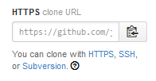
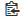
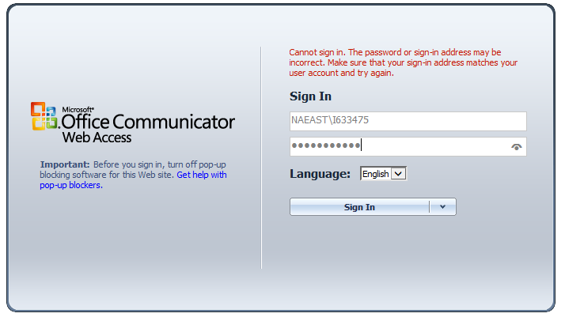

If you have already installed Git or GitHub you can start working with repos.
Together with Git you also installed the "Git Bash", a mini UNIX very convenient for managing Git. Open Git Bash and configure the window to a more useful size.
git config --global user.name "Your Name" git config --global user.email yourname@example.com cd /c/projectsDir md thisProject cd thisProject git init vim app.js dao.js index.html write a few files git add *.js index.html tell Git which files to track/commit (stage) git commit -m "initial version" store the staged files in the repo rm -rf * get rid of the repo
The commands above do the following:
git init initializes an empty project in the
thisProject directory; it creates the .git subdirectory. vim ... creates a few files.git add ... tells Git to "stage" the new files for the next
commit, and to track them from now on.rm deletes the whole repository. A clon of the repo becomes a "repo directory" under your current position,
named after the repo name (projectsDir/binabacus
in the example).
cd projectsDir git clone https://github.com/juanlanus/binabacus
If you wanted to set the local repo in a directory with a different name (like for example "abacus"), specify it after thr URL:
cd projectsDir git clone https://github.com/juanlanus/binabacus abacus
It is possible to use diverse URIs, with git and ssh protocols.
If the source is GitHub, the
repo page displays an artifact that allows you to copy the appropriate URL into
the clipboard by clicking the copy icon .
It's labeled "HTTPS checkout URL".
Using the links below you can choose to copy the URL to clone with HTTPS, SSH,
or Subversion.
This is the URL you paste after git clone.
The remote repo you cloned to start the local repo becomes this repo's "origin".
git remote --verbose origin https://github.com/juanlanus/binabacus (fetch) origin https://github.com/juanlanus/binabacus (push)
"origin" is just a name, automatically assigned (unless you
specified a different one in the --origin switch of the
clone command:
git clone --origin pepe https://github.com/juanlanus/binabacus abacus git remote --verbose pepe https://github.com/juanlanus/binabacus (fetch) pepe https://github.com/juanlanus/binabacus (push)
from:
[core]
editor = 'C:/Program Files (x86)/Notepad++/notepad++.exe'
git config --global core.editor "atom --wait" git config --global core.editor emacs git config --global core.editor vim vim .gitignore tell Git which files not to track
